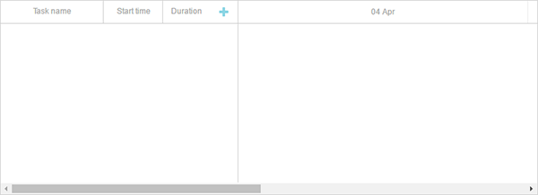
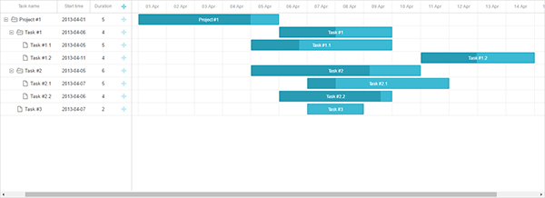
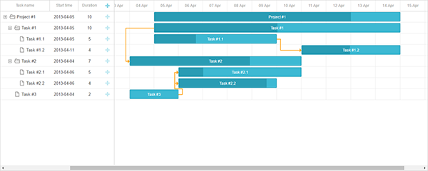

The current tutorial is intended for creating Gantt with Node.js and REST API on the server side. If you use some other technology, check the list of available integration variants below:
Our implementation of Gantt with Node.js will be based on REST API that will be used for communication with a server. Node.js has a set of ready-made solutions, so we won't have to code everything from the very beginning. We will also use MySQL as a data storage.
The complete source code is available on GitHub.
You can have a look at the video guide that shows how to create a Gantt chart using Node.js.
To begin with, we'll create a project folder and then add the required dependencies. We'll make use of the following modules:
So, let's create a project folder and name it "dhx-gantt-app":
mkdir dhx-gantt-app
cd dhx-gantt-app
Now we will create the package.json file. We'll specify the dependencies in it with the following command:
npm init -yWhen the file is ready, open it and put the above listed dependencies into it. The result will look similar to this one:
{
"name": "dhx-gantt-app",
"version": "1.0.0",
"description": "",
"main": "server.js",
"dependencies": {
"body-parser": "^1.15.0",
"express": "^4.13.4"
},
"devDependencies": {},
"scripts": {
"test": "echo \"Error: no test specified\" && exit 1",
"start": "node server.js"
},
"keywords": [],
"author": "",
"license": "MIT"
}
Finally, we need to install the added dependencies using the command below:
npm install
We'll follow a basic express setup: we'll have a single js file for our app backend (let's call it "server.js"), a folder for static files (named "public") and a single html page.
The whole project structure will be as follows:
dhx-gantt-app
├── node_modules
├── server.js
├── package.json
└── public
└── index.htmlCreate a new file named server.js and add the following code into it:
server.js
var express = require('express');
var bodyParser = require('body-parser');
var path = require('path');
var port = 1337;
var app = express();
app.use(express.static(path.join(__dirname, "public")));
app.use(bodyParser.urlencoded({ extended: true }));
app.listen(port, function(){
console.log("Server is running on port "+port+"...");
});
What we have done in this code:
On the next step we will create the "public" folder. This folder will contain the main page of our application - index.html.
This folder is also the right place to put js/css files of dhtmlxGantt. However, in this tutorial we're going to load gantt from CDN, so we'll only have an html page there.
Let's create the public folder and add an index.html file into it. Then open the index.html file and fill it with the following content:
index.html
<!DOCTYPE html>
<head>
<meta http-equiv="Content-type" content="text/html; charset=utf-8">
<script src="https://cdn.dhtmlx.com/gantt/edge/dhtmlxgantt.js"></script>
<link href="https://cdn.dhtmlx.com/gantt/edge/dhtmlxgantt.css" rel="stylesheet">
<style type="text/css"> html, body{
height:100%;
padding:0px;
margin:0px;
overflow: hidden;
}
</style>
</head>
<body>
<div id="gantt_here" style='width:100%; height:100%;'></div>
<script type="text/javascript"> gantt.init("gantt_here");
</script>
</body>
Let's check what we have got at the moment. Go to the project folder and run the following command from the command line:
node server.jsThen open http://127.0.0.1:1337 in a browser. You should see a page with an empty gantt like the one shown here:

The next step is to create a database. We'll make a simple database with two tables for tasks and links:
CREATE TABLE `gantt_links` (
`id` int(11) NOT NULL AUTO_INCREMENT,
`source` int(11) NOT NULL,
`target` int(11) NOT NULL,
`type` varchar(1) NOT NULL,
PRIMARY KEY (`id`)
);
CREATE TABLE `gantt_tasks` (
`id` int(11) NOT NULL AUTO_INCREMENT,
`text` varchar(255) NOT NULL,
`start_date` datetime NOT NULL,
`duration` int(11) NOT NULL,
`progress` float NOT NULL,
`parent` int(11) NOT NULL,
PRIMARY KEY (`id`)
);
and add some test data:
INSERT INTO `gantt_tasks` VALUES ('1', 'Project #1', '2017-04-01 00:00:00',
'5', '0.8', '0');
INSERT INTO `gantt_tasks` VALUES ('2', 'Task #1', '2017-04-06 00:00:00',
'4', '0.5', '1');
INSERT INTO `gantt_tasks` VALUES ('3', 'Task #2', '2017-04-05 00:00:00',
'6', '0.7', '1');
INSERT INTO `gantt_tasks` VALUES ('4', 'Task #3', '2017-04-07 00:00:00',
'2', '0', '1');
INSERT INTO `gantt_tasks` VALUES ('5', 'Task #1.1', '2017-04-05 00:00:00',
'5', '0.34', '2');
INSERT INTO `gantt_tasks` VALUES ('6', 'Task #1.2', '2017-04-11 13:22:17',
'4', '0.5', '2');
INSERT INTO `gantt_tasks` VALUES ('7', 'Task #2.1', '2017-04-07 00:00:00',
'5', '0.2', '3');
INSERT INTO `gantt_tasks` VALUES ('8', 'Task #2.2', '2017-04-06 00:00:00',
'4', '0.9', '3');
Check a detailed example here.
Now we need to implement data loading.
Since we use MySQL, we need to install necessary modules that we could use to access it. In this tutorial CRUD operations will be implented based on the promises approach. So, we will use promise-mysql - a Node.js package for working with MySQL using promises and the bluebird promise library.
You can install them from the console:
npm install bluebird --save
npm install promise-mysql --save
You can choose any other appropriate modules. The code is fairly simple and you can implement the same logic using a different set of tools.
The client side expects data in the JSON format. So, we'll create a route which will return this kind of data.
As you've probably mentioned, there is the "start_date" property in the data, which is kept as a date object. Therefore, it should be passed to the client in the proper format. For this purpose, we will use another module - date-format-lite.
npm install date-format-lite --save
Now you should open the server.js file and add a code similar to this one:
server.js
var Promise = require('bluebird');
require("date-format-lite");
var mysql = require('promise-mysql');
var db = mysql.createPool({
host: 'localhost',
user: 'root',
password: '',
database: 'gantt'
});
app.get("/data", function (req, res) {
Promise.all([
db.query("SELECT * FROM gantt_tasks"),
db.query("SELECT * FROM gantt_links")
]).then(function(results){
var tasks = results[0],
links = results[1];
for (var i = 0; i < tasks.length; i++) {
tasks[i].start_date = tasks[i].start_date.format("YYYY-MM-DD hh:mm:ss");
tasks[i].open = true;
}
res.send({
data: tasks,
collections: { links: links }
});
}).catch(function(error) {
sendResponse(res, "error", null, error);
});
});
What we have done in this code:
Note that we've also added the open property to ensure that the tasks tree will be initially expanded.
Now, we can call this route from the client:
public/index.html
gantt.config.date_format = "%Y-%m-%d %H:%i:%s";
gantt.init("gantt_here");
gantt.load("/data");
Note that date_format config specifies the format of dates (start_date of the task) that comes from the server.
Let's run the application now by opening http://127.0.0.1:1337. The gantt will be loaded with the test data that we have previously added into the database.

The last thing that we should implement is data saving. For this we need a code that will send updates happening on the client side back to the server. Go to public/index.html and add gantt.dataProcessor to the page:
public/index.html
gantt.config.date_format = "%Y-%m-%d %H:%i:%s";
gantt.init("gantt_here");
gantt.load("/data");
var dp = new gantt.dataProcessor("/data");dp.init(gantt);dp.setTransactionMode("REST");
Let's go deeper and see what role it plays.
On each user action: adding, changing or removing a new task or link, DataProcessor will react by sending an AJAX request to the corresponding URL. The request will contain all the parameters necessary for saving changes in the database.
Since DataProcessor is initialized in the REST mode, it will use different HTTP verbs for each type of operation. The list of HTTP verbs together with request and response details is given in the Server-Side Integration article.
Well, what we need to do now is to add the required routes and handlers, that will put changes made on the client to the database, into the server.js file. The resulting code will be rather spacious:
server.js
// add a new task
app.post("/data/task", function (req, res) {
var task = getTask(req.body);
db.query("INSERT INTO gantt_tasks(text, start_date, duration, progress, parent)"
+ " VALUES (?,?,?,?,?)",
[task.text, task.start_date, task.duration, task.progress, task.parent])
.then (function (result) {
sendResponse(res, "inserted", result.insertId);
})
.catch(function(error) {
sendResponse(res, "error", null, error);
});
});
// update a task
app.put("/data/task/:id", function (req, res) {
var sid = req.params.id,
task = getTask(req.body);
db.query("UPDATE gantt_tasks SET text = ?, start_date = ?, "
+ "duration = ?, progress = ?, parent = ? WHERE id = ?",
[task.text, task.start_date, task.duration, task.progress, task.parent, sid])
.then (function(result) {
sendResponse(res, "updated");
})
.catch(function(error) {
sendResponse(res, "error", null, error);
});
});
// delete a task
app.delete("/data/task/:id", function (req, res) {
var sid = req.params.id;
db.query("DELETE FROM gantt_tasks WHERE id = ?", [sid])
.then (function (result) {
sendResponse(res, "deleted");
})
.catch(function(error) {
sendResponse(res, "error", null, error);
});
});
// add a link
app.post("/data/link", function (req, res) {
var link = getLink(req.body);
db.query("INSERT INTO gantt_links(source, target, type) VALUES (?,?,?)",
[link.source, link.target, link.type])
.then (function (result) {
sendResponse(res, "inserted", result.insertId);
})
.catch(function(error) {
sendResponse(res, "error", null, error);
});
});
// update a link
app.put("/data/link/:id", function (req, res) {
var sid = req.params.id,
link = getLink(req.body);
db.query("UPDATE gantt_links SET source = ?, target = ?, type = ? WHERE id = ?",
[link.source, link.target, link.type, sid])
.then (function (result) {
sendResponse(res, "updated");
})
.catch(function(error) {
sendResponse(res, "error", null, error);
});
});
// delete a link
app.delete("/data/link/:id", function (req, res) {
var sid = req.params.id;
db.query("DELETE FROM gantt_links WHERE id = ?",
[sid])
.then (function (result) {
sendResponse(res, "deleted");
})
.catch(function(error) {
sendResponse(res, "error", null, error);
});
});
function getTask(data) {
return {
text: data.text,
start_date: data.start_date.date("YYYY-MM-DD"),
duration: data.duration,
progress: data.progress || 0,
parent: data.parent
};
}
function getLink(data) {
return {
source: data.source,
target: data.target,
type: data.type
};
}
function sendResponse(res, action, tid, error) {
if (action == "error")
console.log(error);
var result = {
action: action
};
if (tid !== undefined && tid !== null)
result.tid = tid;
res.send(result);
}
We have created two sets of routes: one for the tasks entity and another one for the links one. Correspondingly, the "/data/task" URL will serve for requests related to the operations with tasks and the "/data/link" URL will be used to handle requests containing data for operations with links.
The requests types are pretty simple:
The response will be a JSON object with the type of performed operation or "error" in case the code fails.
The response for the POST request will also contain the database id of the new record. It will be applied on the client side, so it will be possible to map a new item to the database entity.
That's all. Open http://127.0.0.1:1337 and you will see a fully operational gantt chart.

The client-side gantt allows reordering tasks using drag and drop. So if you use this feature, you'll have to store this order in the database. You can check the common description here.
Let's now add this feature to our app.
Firstly, we need to allow users to change the tasks order in the UI. Open the "Index" view and update the configuration of gantt:
public/index.html
gantt.config.order_branch = true;gantt.config.order_branch_free = true;
gantt.init("gantt_here");
Now, let's reflect these changes on the backend. We are going to store the order in the column named "sortorder", the updated gantt_tasks table declaration may look as follows:
CREATE TABLE `gantt_tasks` (
`id` int(11) NOT NULL AUTO_INCREMENT PRIMARY KEY,
`text` varchar(255) COLLATE utf8_unicode_ci NOT NULL,
`start_date` datetime NOT NULL,
`duration` int(11) NOT NULL,
`progress` float NOT NULL DEFAULT 0,
`parent` int(11) NOT NULL,
`sortorder` int(11) NOT NULL ) ENGINE=InnoDB DEFAULT CHARSET=utf8 COLLATE=utf8_unicode_ci;
Or add the column to the table you already have:
ALTER TABLE `gantt_tasks` ADD COLUMN `sortorder` int(11) NOT NULL;
After that we need to update the server.js file:
1 . GET /data must return tasks ordered by the sortorder column:
server.js
app.get("/data", function (req, res) {
Promise.all([
db.query("SELECT * FROM gantt_tasks ORDER BY sortorder ASC"), db.query("SELECT * FROM gantt_links")
]).then(function(results){
var tasks = results[0],
links = results[1];
for (var i = 0; i < tasks.length; i++) {
tasks[i].start_date = tasks[i].start_date.format("YYYY-MM-DD hh:mm:ss");
tasks[i].open = true;
}
res.send({
data: tasks,
collections: { links: links }
});
}).catch(function(error) {
sendResponse(res, "error", null, error);
});
});
2 . Newly added tasks must receive the initial value sortorder:
server.js
app.post("/data/task", function (req, res) { // adds new task to database
var task = getTask(req.body);
db.query("SELECT MAX(sortorder) AS maxOrder FROM gantt_tasks")
.then (function(result) {
// assign max sort order to the new task
var orderIndex = (result[0].maxOrder || 0) + 1;
return db.query("INSERT INTO gantt_tasks(text, start_date, duration, progress, "
+"parent, sortorder) VALUES (?,?,?,?,?,?)",
[task.text, task.start_date, task.duration, task.progress, task.parent,
orderIndex]); })
.then (function (result) {
sendResponse(res, "inserted", result.insertId);
})
.catch(function(error) {
sendResponse(res, "error", null, error);
});
});
3 . Finally, when a user reorders tasks, task orders must be updated:
server.js
// update task
app.put("/data/task/:id", function (req, res) {
var sid = req.params.id,
target = req.body.target,
task = getTask(req.body);
Promise.all([
db.query("UPDATE gantt_tasks SET text = ?, start_date = ?, duration = ?, progress = ?, parent = ? WHERE id = ?",
[task.text, task.start_date, task.duration, task.progress, task.parent, sid]),
updateOrder(sid, target) ])
.then (function(result) {
sendResponse(res, "updated");
})
.catch(function(error) {
sendResponse(res, "error", null, error);
});
});
function updateOrder(taskId, target){
var nextTask = false;
var targetOrder;
target = target || "";
if(target.startsWith("next:")) {
target = target.substr("next:".length);
nextTask = true;
}
return db.query("SELECT * FROM gantt_tasks WHERE id = ?", [target])
.then (function(result) {
if (!result[0])
return Promise.resolve();
targetOrder = result[0].sortorder;
if(nextTask)
targetOrder++;
return db.query("UPDATE gantt_tasks SET sortorder = sortorder + 1 "
+" WHERE sortorder >= ?", [targetOrder])
.then (function(result) {
return db.query("UPDATE gantt_tasks SET sortorder = ? WHERE id = ?",
[targetOrder, taskId]);
});
});
}
You can check a ready demo on GitHub.
Gantt doesn't provide any means of preventing an application from various threats, such as SQL injections or XSS and CSRF attacks. It is important that responsibility for keeping an application safe is on the developers implementing the backend. Read the details in the corresponding article.
In case you've completed the above steps to implement Gantt integration with Node.js, but Gantt doesn't render tasks and links on a page, have a look at the Troubleshooting Backend Integration Issues article. It describes the ways of identifying the roots of the problems.
Now you have a fully functioning gantt. You can view the full code on GitHub, clone or download it and use it for your projects.
You can also check guides on the numerous features of gantt or tutorials on integrating Gantt with other backend frameworks.
Back to top